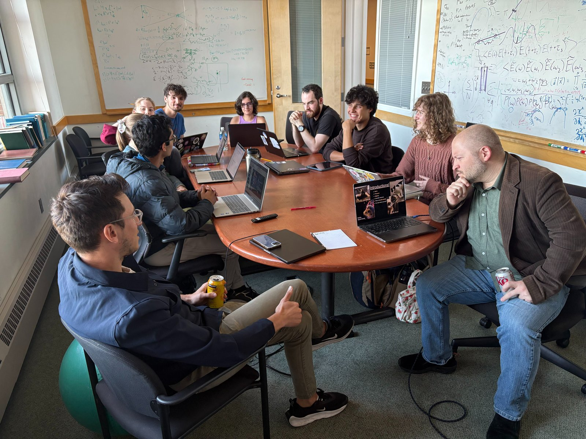

Planet–Star Interaction Group · DiRAC Institute · University of Washington
The wreckage of planet formation, written in starlight.
Rocky bodies collide, disks warp, and dust drifts across the face of a star. Each event leaves a fingerprint in how that star's brightness changes with time. We hunt those fingerprints across optical and infrared surveys, then follow them up with spectroscopy to work out what the dust is made of and where it came from.
Four threads, one question
What happens to solids around young stars
Giant impacts
Catastrophic collisions between rocky bodies release clouds of debris and vapour. The signature is a star that brightens in the infrared while its optical light turns erratic — a short-lived window onto planet building.
Read more Time domainDippers and disk occultations
Some stars fade for hours, others for years. We characterise the depth, shape, and recurrence of these dimming events to map the structure of the disk material passing in front of the star.
Read more SpectroscopyDust composition
Silicate and silica features in mid-infrared spectra record grain mineralogy, size, and processing history. They tell us whether we are seeing primordial material or something freshly shattered.
Read more Rubin · Gaia Alerts · ZTFFinding these events at scale
Rare, slow, aperiodic transients are exactly what alert brokers tend to miss. We build the selection methods and variability statistics needed to pull them out of survey streams as they happen.
Read moreGroup log
News, papers, talks
-
First PSI Group meeting of the year.

Our first group photo, Autumn 2026.
Working with us
We host UW undergraduates, graduate students, and visiting researchers. If the light curves above look like your kind of problem, get in touch.